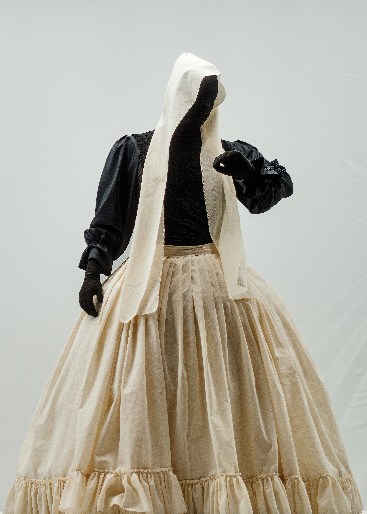
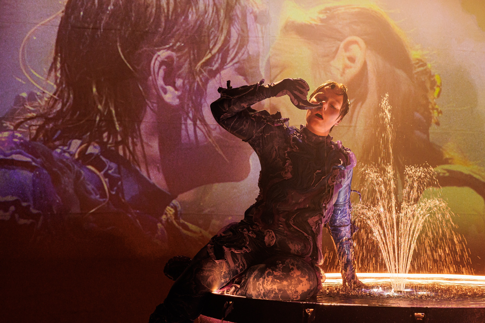

Info
Member of the board of LUST association 2026
Steal This Performance wins Fast Forward 2025 Jury Award (nachtkritik.de)
Pamela Blod, independent short film — post-production spring 2026
Medeltiden @ Åbo Svenska Teater — premiere 4.11.2025
Kotimaisen näytelmän festivaali KNF — 18.9.2025
Kärnminne installation @ ParKino Festival — 28-30.8.2025
Axel Ridberg is a sound designer based in Helsinki, Finland. Working primarily within performing arts. Also short films, commercial work, installations, live mixing, creative coding, and other sound-related projects.
He has a master’s and bachelor’s degree in sound design from the Theatre Academy at the University of the Arts Helsinki, a bachelor’s degree in social sciences from Åbo Akademi University, and has also studied film and television sound at Arcada University of Applied Sciences. His work has been presented at e.g. Helsinki City Theatre, Teater Viirus, Q-teatteri, Reality Research Center, and at the Fast Forward Festival.
Axel Ridberg on Helsingissä asuva äänisuunnittelija. Hän työskentelee pääasiassa esittävän taiteen parissa, mutta myös lyhytelokuvien, installaatioiden, live‑äänen, luovan koodauksen ja kaupallisten projektien parissa.
Hänellä on äänisuunnittelun maisterin ja kandidaatin tutkinnot Teatterikorkeakoulusta (Taideyliopisto), valtiotieteiden kandidaatin tutkinto Åbo Akademista sekä opintoja elokuva- ja tv‑äänestä Arcada‑ammattikorkeakoulussa. Ridbergin töitä on esitetty mm. Helsingin Kaupunginteatterissa, Teater Viiruksessa, Q‑teatterissa, Todellisuuden tutkimuskeskuksessa sekä Fast Forward ‑festivaalilla.
Axel Ridberg är en ljuddesigner bosatt i Helsingfors, Finland. Han arbetar främst inom scenkonst, men också med kortfilmer, installationer, live‑mixning, kreativ kodning och kommersiella projekt.
Han har magister‑ och kandidatexamen i ljuddesign från Teaterhögskolan vid Konstuniversitetet, en kandidatexamen i samhällsvetenskaper från Åbo Akademi samt studier i film‑ och tv‑ljud vid Arcada yrkeshögskola. Hans arbeten har presenterats vid bland annat Helsingfors Stadsteater, Teater Viirus, Q‑teatteri, Reality Research Center och Fast Forward‑festivalen.
Projects


CV
Education
- 2022–2025Master's degree, Sound Design — Theatre Academy, Uniarts Helsinki
- 2019–2022Bachelor degree, Sound Design — Theatre Academy, Uniarts Helsinki
- 2018–2019Sound Design for Film & TV — Arcada University of Applied Sciences
- 2014–2018Bachelor's degree — Åbo Akademi University, Faculty of Social Sciences
Works
- 2025Medeltiden — Sound Design; Åbo Svenska Teater
- 2025Lea-spektaakkeli — Sound Design; Kotimaisen näytelmän festivaali KNF
- 2025Kärnminne — Multi‑media installation, concept & execution; ParKino Festival
- 2025Agora — Sound Design, Helsinki City Theatre, Nykyesityksen näyttämö
- 2025Diptyk — Sound Design, Teater Viirus
- 2024Katveisto — Sound Design, audio walk; Todellisuuden tutkimuskeskus
- 2024Release — Sound Design (on‑set & post), short film; premiere Bio Rex Lasipalatsi spring 2024
- 2024Varasta tämä esitys — Sound Design, Theatre Academy / Winner Jury Prize Fast Forward Festival 2025, Dresden, Germany
- 2023Deep Fantasea — Sound Design, Hangö Teaterträff
- 2023Äckel — Sound Design, Teater Mestola / Viirus Guest
- 2023Message from Tyler, Memento mori, Kirsikkatarha — Sound Design, Q‑teatteri / Teatterikorkeakoulu / Selected for Fast Forward Festival 2023, Dresden, Germany
- 2022Virtaus — Sound Design, Theatre Academy (BA thesis)
- 2022Den kreativa klådan — Sound Design, Teater Mestola / Universum
- 2022Sellout — Voice actor, short film
- 2021148 — Sound Design, concept; Theatre Academy
- 2021Ett Drömspel — Assistant Sound Designer; Carl Knif Company / Svenska Teatern / Riksteatern
- 2017Kosketettavissa — Sound Design; Turku University of Applied Sciences
- 2016Kehotettu — Sound Design; Turku University of Applied Sciences
- 2015Ursäkta, talar du svenska? — Prompter (kuiskaaja); Åbo Svenska Teater
- 2014–2015Ronja Rövardotter — Musician / Performer; Åbo Svenska Teater
- 2012–2013Hair — Live video / Performer; Åbo Svenska Teater
- 2012Pähkinänsärkijä — Stage hand; Åbo Svenska Teater / Aurinkobaletti
- 2011Skarvholma gästhamn — Stage hand; Åbo Svenska Teater
Other
- 2026–LUST rf — Board member
- 2017–2018FinnAgora — Intern / Producer / Coordinator; Finnagora, Budapest (TelepArt, exhibitions, festival projects)